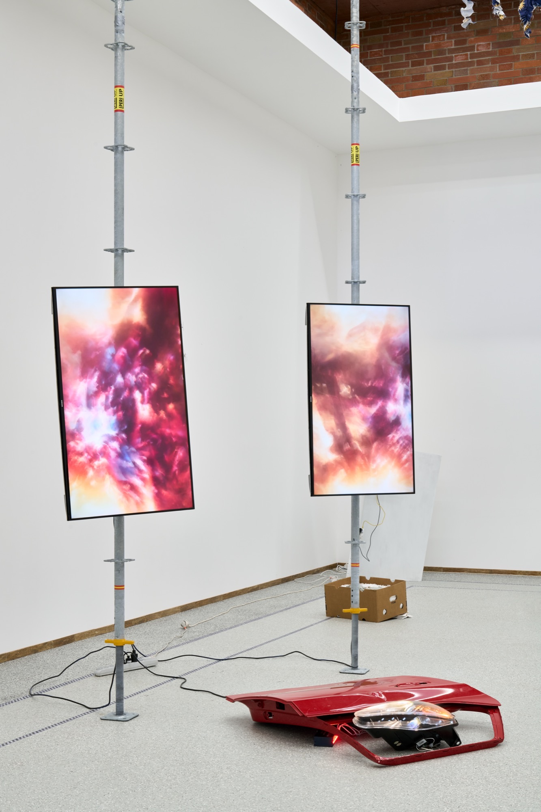
file 001 / a-v performance / 2025 / around 12m
My Last Drop of Gasoline
Sounded car wreck parts and projection. After the crash the car keeps a voice and narrates its own end, movement turning into stillness.
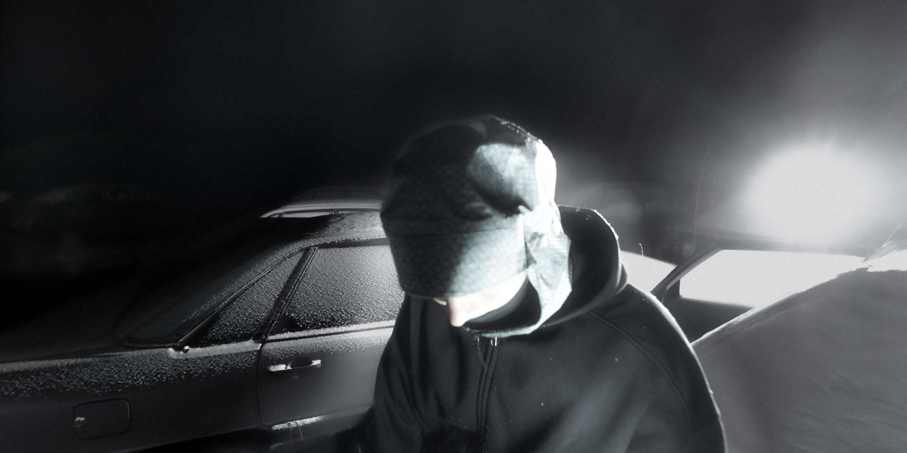

file 001 / a-v performance / 2025 / around 12m
Sounded car wreck parts and projection. After the crash the car keeps a voice and narrates its own end, movement turning into stillness.
rule_00: do not explain the prosthetic
rule_01: the pillow is heavier than the chrome
rule_02: every loop returns you to the same body
rrule_03: soft on purpose, broken on purpose
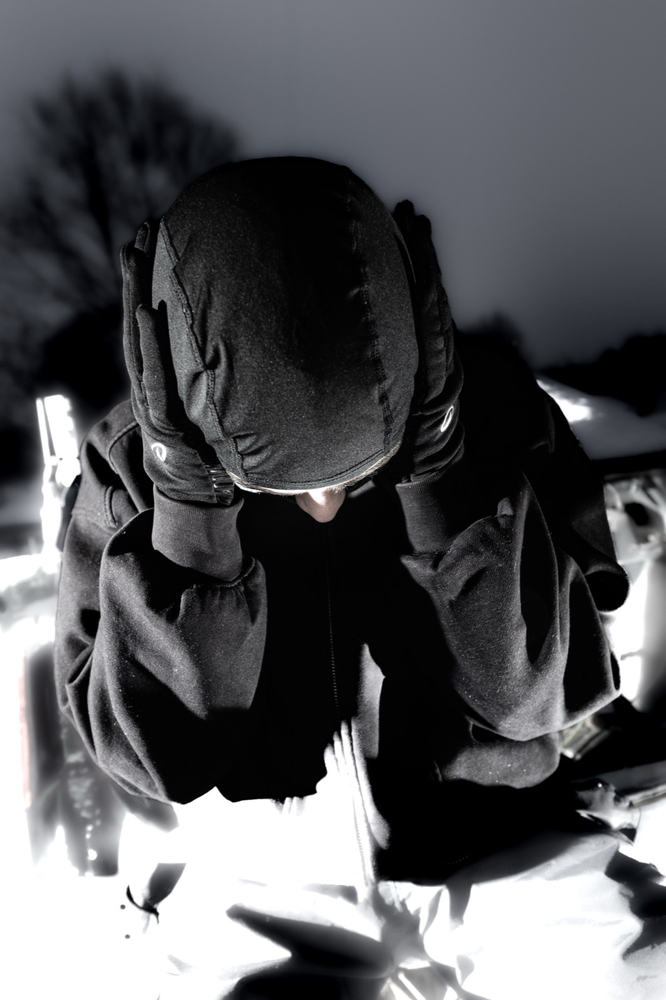
press file / head held under the headlight
soft head, black fabric, the light landing like a bad thought
machine log recovered:


projection still / the car speaking in subtitles
Not a clean artist statement. Closer to subtitles pulled out of a broken car.
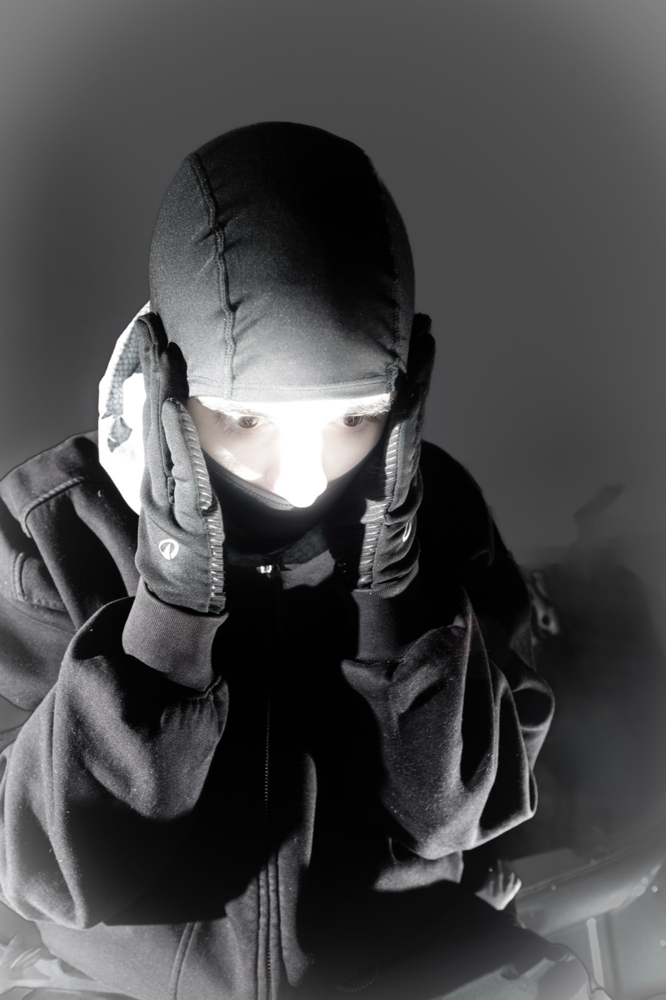
sxilence / corrupted release archive / repair diary
EPs, edits, remixes and loose SoundCloud files kept like a repair log.

A modular live performance of self-made instruments, electronics and objects. It never settles into a fixed piece, each version tries again to open a portal.
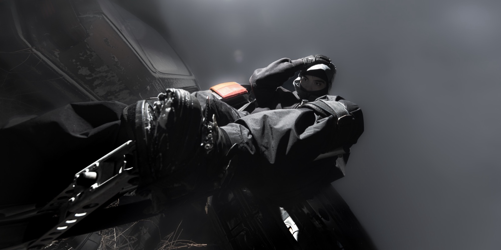
short film / gta v / 2024 / 16:59
A player tries to rewrite the rules of GTA V. The code is a timed fork bomb. Once an NPC, always an NPC, forever SUV.
press file / standing between two car bodies
the gap as a stage, snow as broken foam, the body as an attachment
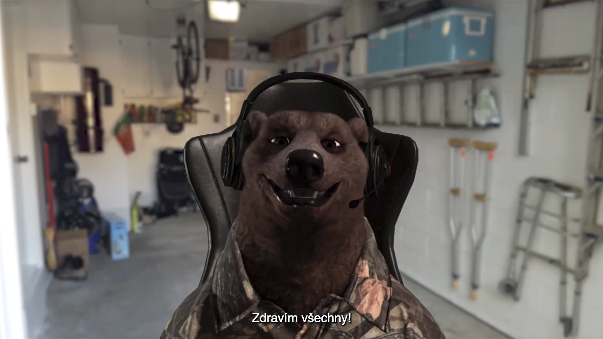
short film / avatar / youtube crash / 2024
Rogers the bear records a racing game, fails to resist the notification, crashes, sings, wakes up, and gets offered a job by a corporate anime girl.
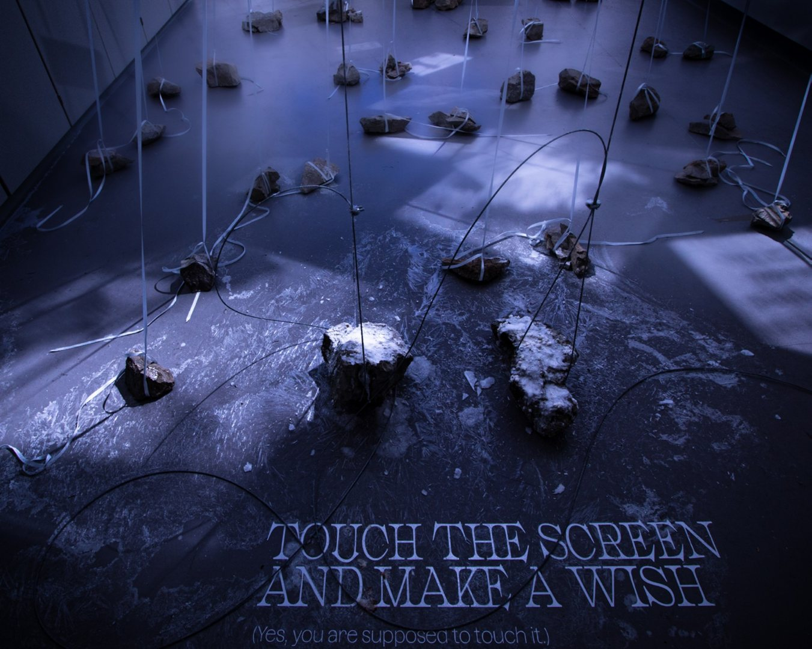
visual novel / installation / 2025
A bird follows the wrong light and takes a streetlamp for the sun. A small visual novel where the navigation breaks under too much brightness.
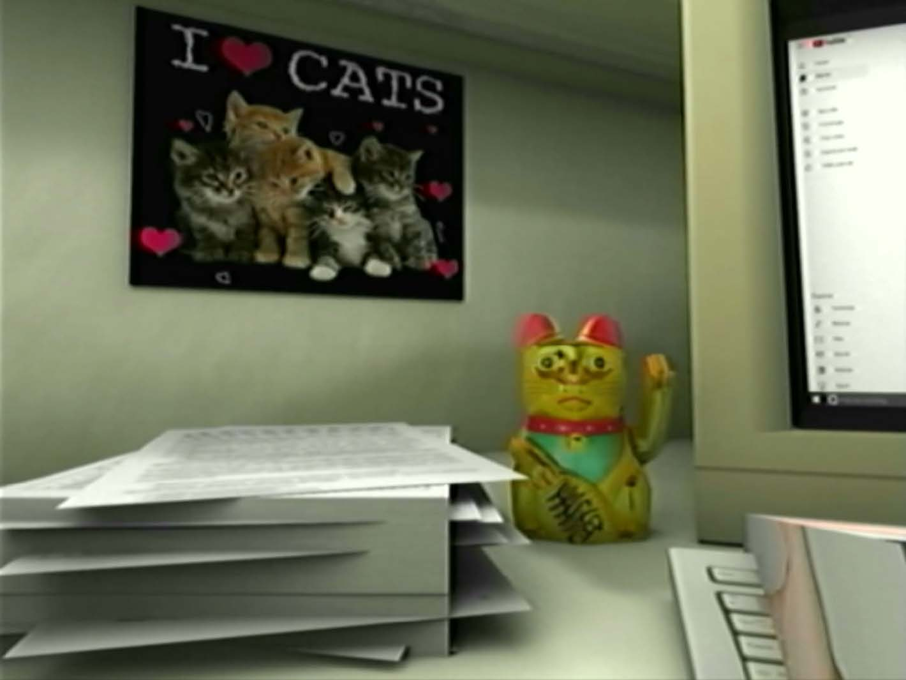
short film / identity / 2022 / 4:17
A personal short film in damaged 3D, degraded through a CRT screen. I try to break out of the identity I was handed, with one small symbolic interruption.
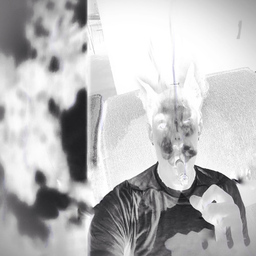
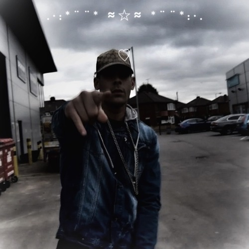
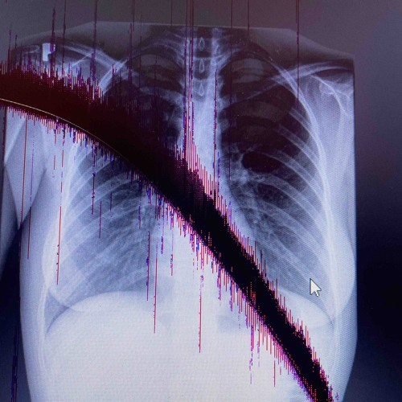


vfx / 3d / motion / visual systems
external log / verified traces / internet crumbs with teeth
2026 / critical text / artycok tv
Ondrej Trhon writes about therapy sessions w/YouTube, VTubing, the avatar body, livestream anxiety and the platform job interview.
open text2025 / publication / avu
Matteo Ruggiero appears among the authors of the AVU-supported publication on horror, artificial bodies and avatar culture.
open publication2025 / paf / jine vize cz
GTA V, autonomy loops and car-body mythology entered the Jine Vize CZ 2025 finalist selection through PAF Olomouc.
open paf file2025 / brno16 / live score
Kino Art / BRNO16 night placing Matteo Ruggiero inside a live-score collision with early cinema, image history and sound.
open kino art file2025 / exhibition-performance / gampa
Performed during Neni to tak spatny, the FaVU Intermedia Studio intervention at GAMPA around cars, wreckage, voice and bodily systems.
open favu note2024 / festival live / ostrava kamera oko
Festival listing for the Brno-based musician and producer layer: global club, post-rap, crystalline sound design, dark pop machinery.
open live file2026 / vinyla night / archa+
Czech Television's report on the Vinyla awards notes sxilence among the special guests performing during the festival-format night.
open report2025 / vfx + graphic design / lebanon hanover
Lebanon Hanover's official page credits Matteo Ruggiero with Oliver Torr for VFX and graphic design on the Torture Rack video.
open credit2025 / blog mention / create digital music
CDM links sxilence with BoLs/sLoB and Toyota Vangelis in the Kluci z garaze hyperpop-adjacent Czech music weather system.
open mention2024 / underdogs / hearts ceremony
Underdogs night with Fae Bestia, Petr Bursa, sxilence and others: dark pop, experimental electronics and heart-transplant club feelings.
open ra event2025 / amphibian / optic hazard
Quadrophonic soundsystem anniversary listing with COUNT & sxilence: Optic Hazard among the live and club lineup.
open ra event2025 / stegi radio / glazmo network
Radio/show page describing sxilence as the Italo-Czech project moving through a shadowy post-internet reality.
open radio file2026 / vinyla / official report
Vinyla's own report confirms sxilence among the special guests performing during the festival-format awards night.
open report2026 / moon noize / construction crew
Moon Noize artist page for the new Brno group: count, MC Golem and sxilence reducing 140 bpm to grime/dubstep bone matter.
open crew pageaccess layer
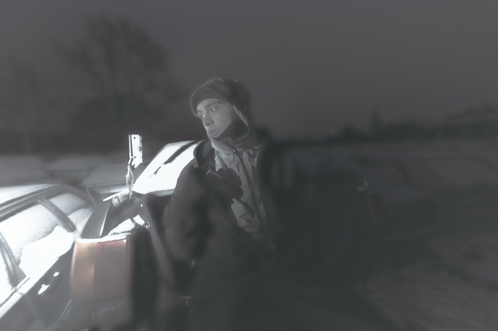

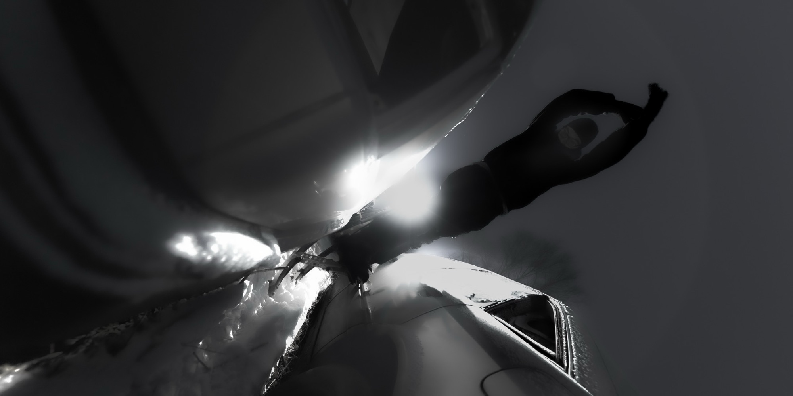